리눅스마스터-2급 (2020-06-13 기출문제)
1과목: 리눅스 운영 및 관리
1. 다음과 같이 허가권 값이 변경되었을 경우 중간에 실행된 명령으로 알맞은 것은?
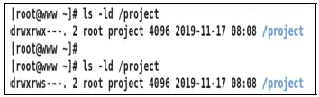
- chmod u+s /project
- chmod g+s /project
- chmod g+t /project
- chmod o+t /project
(정답률: 79%)

2. 다음 중 fdisk 명령으로 파티션 속성을 변경할 때 사용하는 값의 조합으로 틀린 것은?
- Linux: 81
- Swap: 82
- LVM: 8e
- Raid: fd
(정답률: 61%)
3. 다음은 ihduser 사용자의 디스크 쿼터를 설정하는 과정이다. ( 괄호 ) 안에 들어갈 명령으로 알맞은 것은?
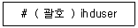
- quota
- quotaon
- setquota
- edquota
(정답률: 68%)
4. 다음 중 디렉터리에 부여되는 w 권한에 대한 설명으로 알맞은 것은?
- 해당 디렉터리에 생성되는 파일을 수정할 수 있다.
- 해당 디렉터리에 파일을 생성 또는 삭제할 수 있다.
- 해당 디렉터리에 파일을 생성할 수 있지만 삭제할 수 없다.
- 해당 디렉터리에 파일을 생성하고 해당 파일을 수정할 수 있다.
(정답률: 55%)
5. 다음 명령의 실행 결과로 생성되는 lin.txt 파일의 허가권 값으로 알맞은 것은?
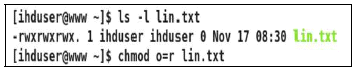
- -------r--
- -r--r--r--
- -rwxrwx-wx
- -rwxrwxr--
(정답률: 77%)
6. 다음 중 가장 먼저 저널링(Journaling) 기술이 탑재된 파일 시스템으로 알맞은 것은?
- ext
- ext2
- ext3
- ext4
(정답률: 80%)
7. 다음 명령을 실행했을 때 /dev/sdb1에 생성되는 파일 시스템으로 알맞은 것은?
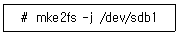
- ext2
- ext3
- ext4
- xfs
(정답률: 68%)
8. 다음 중 손상된 파일 시스템을 검사하고 수리하는 명령으로 알맞은 것은?
- mkfs
- fsck
- free
- fdisk
(정답률: 79%)
9. 다음 결과와 같을 때 umask 명령 실행 시 출력되는 값으로 알맞은 것은?
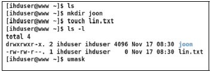
- 0002
- 0200
- 0664
- 0775
(정답률: 72%)
10. 현재 디렉터리 안에 있는 data 디렉터리의 소유권을 하위디렉터리 및 파일을 포함하여 ihduser로 변경하는 과정이다. 다음 ( 괄호 ) 안에 들어갈 내용으로 알맞은 것은?
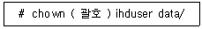
- -d
- -r
- -D
- -R
(정답률: 80%)
11. 다음 중 셸에서 선언된 셸 변수 전부를 확인할 때 사용하는 명령으로 알맞은 것은?
- set
- env
- chsh
- export
(정답률: 50%)
12. 다음 중 시스템 계정에 설정되는 셸로 알맞은 것은?
- /bin/bash
- /bin/dash
- /bin/tcsh
- /sbin/nologin
(정답률: 46%)
13. 다음 명령에 대한 설명으로 알맞은 것은?
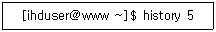
- 최근에 실행한 마지막 5개의 명령어 목록을 출력한다.
- 히스토리 명령 목록의 번호 중에서 5번에 해당하는 명령을 실행한다.
- 히스토리 명령 목록에서 5만큼 거슬러 올라가서 해당 명령을 실행한다.
- 히스토리 명령 목록에서 번호가 1번부터 5번에 해당하는 명령을 출력한다.
(정답률: 69%)
14. 다음 중 가장 최근에 등장한 셸로 알맞은 것은?
- csh
- ksh
- tcsh
- bash
(정답률: 74%)
15. 다음 명령의 결과로 알맞은 것은?
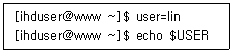
- lin
- ihduser
- $USER
- 화면에 아무것도 출력되지 않는다.
(정답률: 55%)
16. 다음 명령에 대한 설명으로 알맞은 것은?
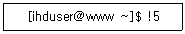
- 최근에 실행한 마지막 5개의 명령어 목록을 출력한다.
- 히스토리 명령 목록의 번호 중에서 5번에 해당하는 명령을 실행한다.
- 히스토리 명령 목록에서 5만큼 거슬러 올라가서 해당 명령을 실행한다.
- 히스토리 명령 목록에서 번호가 1번부터 5번에 해당하는 명령을 출력한다.
(정답률: 56%)
17. 다음 설명에 해당하는 셸로 알맞은 것은?
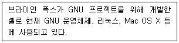
- bash
- dash
- tcsh
- ksh
(정답률: 77%)
18. 다음 결과에 해당하는 환경변수로 알맞은 것은?
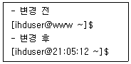
- PS1
- PS2
- DISPLAY
- PROMPT
(정답률: 59%)
19. top 명령은 실행 상태에서 다양한 명령을 입력하여 프로세스 상태를 출력하거나 제어할 수 있다. 다음 중 관련 설명으로 틀린 것은?
- k 는 PID값을 입력하여 종료신호를 보낸다.
- p 는 프로세스와 CPU항목을 on/off 한다.
- m 은 메모리 관련 항목을 on/off 한다.
- W 는 바꾼 설정을 저장한다.
(정답률: 58%)
20. 다음 중 cron에 관한 설명으로 알맞은 것은?
- cron은 root 권한으로만 수행 가능하다.
- crontab 파일은 총 5개의 필드로 구성되어 있다.
- 주기적으로 실행하는 작업만 등록하여 사용할 수 있다.
- 시스템 운영에 필요한 작업은 /var/crontab 파일에 관련 정보가 저장된다.
(정답률: 56%)
21. 다음 중 fg %2 명령을 실행했을 경우 설명으로 알맞은 것은?
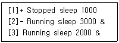
- fg + 와 동일한 명령으로 sleep 1000 작업이 실행된다.
- 백그라운드에서 실행되던 sleep 2000 작업이 실행된다.
- fg – 와 동일한 명령으로 sleep 2000 작업이 실행된다.
- 백그라운드에서 실행되던 sleep 3000 작업이 실행된다.
(정답률: 67%)
22. 다음 중 프로세스 식별번호가 2219, 2229, 2239 인 프로세스를 강제 종료하는 명령으로 알맞은 것은?
- kill -9 22*9
- kill -9 22{1,2,3}9
- killall -9 2219 2229 2239
- killall -9 2219, 2229, 2239
(정답률: 64%)
23. 시그널에 관한 설명으로 알맞은 것은?
- 시그널은 사용자의 인터럽트 키를 통해서만 발생된다.
- 시그널은 프로세스 간 메시지를 보내는 통신 할 때 이용한다.
- 시그널 목록은 kill -l 로 확인할 수 있고, 이름으로만 사용할 수 있다.
- 일반적으로 사용하는 시그널은 SIGINT, SIGKILL, SIGSTART, SIGSTOP 등이 있다.
(정답률: 61%)
24. 다음 ( 괄호 ) 안에 들어갈 내용으로 알맞은 것은?
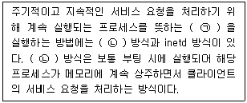
- ㉠ multitasking ㉡ crond
- ㉠ multitasking ㉡ standalone
- ㉠ daemon ㉡ crond
- ㉠ daemon ㉡ standalone
(정답률: 77%)
25. 다음 조건으로 cron을 이용해서 일정을 등록할 때 알맞은 것은?(문제 오류로 가답안 발표시 2번으로 발표되었으나, 확정답안 발표시 모두 정답처리 되었습니다. 여기서는 가답안인 2번을 누르면 정답 처리 됩니다.)
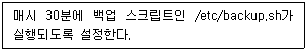
- 30 * * * * /etc/backup.sh
- */30 * * * * /etc/backup.sh
- * 30 * * * /etc/backup.sh
- * */30 * * * /etc/backup.sh
(정답률: 74%)
26. 다음 중 SIGINT(또는 INT)의 시그널 번호로 알맞은 것은?
- 1
- 2
- 9
- 15
(정답률: 66%)
27. 다음 ( 괄호 ) 안에 들어갈 내용으로 알맞은 것은?
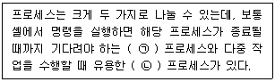
- ㉠ Foreground ㉡ Bandground
- ㉠ Foreground ㉡ Background
- ㉠ Background ㉡ Foreground
- ㉠ Bandground ㉡ Foreground
(정답률: 78%)
28. 프로세스의 우선순위를 변경할 때 사용하는 명령들로 알맞은 것은?
- nice, renice
- nice, thread
- nohup, renice
- nohup, thread
(정답률: 81%)
29. 다음에서 설명하는 vi 명령으로 알맞은 것은?
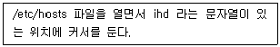
- vi +/ihd /etc/hosts
- vi +ihd /etc/hosts
- vi +/etc/hosts /ihd
- vi +/etc/hosts ihd
(정답률: 45%)
30. 다음 중 vi 편집기의 환경 설정을 지속적으로 사용하기 위한 설정 파일로 알맞은 것은?
- .exrc
- .cshrc
- .profile
- .history
(정답률: 58%)
31. 다음 중 vi 편집기의 개발 순서로 알맞은 것은?
- gVim → vi → vim
- vim → gVim → vi
- vim → vi → gVim
- vi → vim → gVim
(정답률: 81%)
32. 다음 중 vi 편집기로 문자열을 치환할 때 사용하는 정규 표현식 종류와 설명으로 알맞은 것은?
- $ : 줄의 끝을 의미
- ? : 줄의 시작을 의미
- < : 단어의 끝을 의미
- ^ : 단어의 시작을 의미
(정답률: 58%)
33. 다음 중 텍스트 환경 기반의 콘솔 환경에서 사용하지 못하는 에디터로 알맞은 것은?
- vi
- pico
- gedit
- emacs
(정답률: 79%)
34. 다음 중 vi 편집기로 문서를 편집한 후 저장하고 종료하는 명령으로 알맞은 것은?
- :w
- :w!
- :q!
- :wq
(정답률: 84%)
35. 환경 설정과 관련된 옵션 정보를 확인하려고 할 때 ( 괄호 ) 안에 들어갈 내용으로 알맞은 것은?
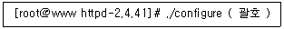
- --help
- --config
- --option
- --install
(정답률: 71%)
36. /bin/ls라는 파일을 설치한 패키지 이름을 알아보려고 한다. ( 괄호 ) 안에 들어갈 내용을 알맞은 것은?
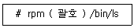
- -qc
- -qf
- -ql
- -qv
(정답률: 43%)
37. 다음 중 configure 작업으로 생성되는 파일명으로 알맞은 것은?
- make
- cmake
- Makefile
- configure.cmake
(정답률: 66%)
38. 다음은 압축되어 묶여진 tar 파일을 풀지 않고 내용만 확인하려고 한다. ( 괄호 ) 안에 들어갈 내용을 알맞은 것은?
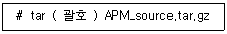
- zcvf
- zxvf
- ztvf
- zrvf
(정답률: 64%)
39. 다음 중 인텔 계열 CPU에 사용 가능한 데비안 리눅스 패키지 파일의 형식으로 알맞은 것은?
- vsftpd_3.0.3-12_s390.deb
- vsftpd_3.0.3-12_s390.apt
- vsftpd_3.0.3-12_i386.deb
- vsftpd_3.0.3-12_i386.apt
(정답률: 72%)
40. 다음 중 레드햇 계열 리눅스에서 사용하는 패키지 관리기법의 조합으로 가장 알맞은 것은?
- rpm, yum
- rpm, apt-get
- dpkg, yum
- YaST, yum
(정답률: 75%)
41. 다음은 vsftpd라는 패키지를 의존성을 무시하고 제거하려고 한다. ( 괄호 ) 안에 들어갈 내용을 알맞은 것은?
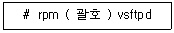
- -d --nodeps
- -r --nodeps
- -e --nodeps
- -v --nodeps
(정답률: 50%)
42. 다음은 telnet-server라는 패키지를 삭제하는 과정이다. ( 괄호 ) 안에 들어갈 내용을 알맞은 것은?
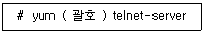
- delete
- destroy
- remove
- eliminate
(정답률: 77%)
43. 다음 중 ALSA에 대한 설명으로 틀린 것은?
- GPL 및 LGPL 라이선스 기반으로 배포되고 있다.
- OSS에 비해 적은 양의 단순한 API를 제공하고 있다.
- 1998년 Jaroslav Kysela가 주도하는 ALSA 프로젝트에서 시작되었다.
- 사운드 카드용 장치 드라이버를 위한 API를 제공하는 소프트웨어 프레임워크이다.
(정답률: 64%)
44. 다음 중 프린터 큐의 상태를 출력하는 명령으로 알맞은 것은?
- lp
- lpr
- lprm
- lpstat
(정답률: 69%)
45. 다음 중 CUPS에 대한 설명으로 틀린 것은?
- 웹 서버의 Common Log Format 형태의 로그파일을 제공한다.
- HTTP 기반의 IPP를 사용하고, SMB 프로토콜도 부분적으로 지원한다.
- CUPS 프린트 데몬의 환경 설정 파일의 기본문법이 아파치의 httpd.conf와 유사하다.
- CUPS가 제공하는 장치 드라이버는 어도비의 PPD 형식의 이미지 파일을 이용하여 설정한다.
(정답률: 55%)
46. 다음 중 설치된 PCI 관련 장치의 목록을 확인할 수 있는 명령으로 알맞은 것은?
- pci
- lpc
- lspci
- pciinfo
(정답률: 63%)
47. 다음 중 GUI 기반의 스캐너 도구로 알맞은 것은?
- xcam
- scanadf
- scanimage
- sane-find-scanner
(정답률: 54%)
48. 다음중System V 계열의프린트명령어로알맞은것은?
- lp
- lpr
- lpq
- lprm
(정답률: 62%)
2과목: 리눅스 활용
49. 다음과 같은 결과를 위해 실행하는 명령으로 알맞은 것은?
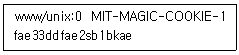
- xhost list $DISPLAY
- xhost list DISPLAY
- xauth list $DISPLAY
- xauth list DISPLAY
(정답률: 61%)
50. 다음 중 X 윈도에 관한 설명으로 가장 알맞은 것은?
- 런레벨 3으로 설정된 상태라면 부팅 시에 X 윈도가 시작된다.
- X 윈도는 정확한 그래픽 카드 설정이 필요하고 호환 모드 설정은 제공하지 않는다.
- X 윈도는 디스플레이 장치에 의존적이지 않고 서로 다른 기종을 함께 사용할 수 있다.
- 현재 리눅스를 비롯해 유닉스 대부분에서 사용되는 X 윈도는 XFree86 기반이다.
(정답률: 58%)
51. 다음 중 리눅스를 시작할 때 X 윈도가 실행되도록 관련 설정 파일을 수정하려고 할 때 들어갈 내용으로 알맞은 것은?
- id:3:startx:
- id:5:startx:
- id:3:initdefault:
- id:5:initdefault:
(정답률: 55%)
52. 다음 중 X 윈도에 대한 설명으로 알맞은 것은?
- 1986년 Matthias Ettrich가 오픈 소스 프로젝트로 만들었다.
- 노틸러스(Nautilus) 프로젝트의 일환으로 발표되었다.
- X 컨소시엄에 의해 X11 버전이 처음으로 개정되어 X11R2가 발표되었다.
- X11R7.7 버전을 끝으로 XFree86 프로젝트는 해체되었다.
(정답률: 54%)
53. 다음 중 특정 사용자가 X 윈도를 실행 시 생성되는 키 값이 저장되는 곳으로 알맞은 것은?
- $HOME/.Xgrant
- $HOME/.Xauthority
- $HOME/.Xpermission
- $HOME/.Xcertification
(정답률: 74%)
54. 다음 설명에 가장 알맞은 것은?
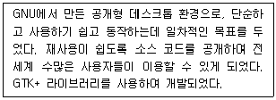
- KDE
- GNOME
- KERNEL
- KWin
(정답률: 76%)
55. 다음 중 리눅스 부팅 시 X 윈도를 실행하기 위해 부팅 모드를 설정할 수 있는 파일로 알맞은 것은?
- /etc/init
- /etc/inittab
- /etc/fstab
- /etc/runlevel
(정답률: 51%)
56. 다음 중 GNOME 데스크톱에서 제공하는 Eye of GNOME Image Viewer를 실행시키기 위해 명령행에서 입력하는 명령으로 알맞은 것은?
- image
- viewer
- eog
- eyes
(정답률: 72%)
57. 다음과 같은 조건일 때 설정되는 브로드캐스트 주소 값으로 알맞은 것은?
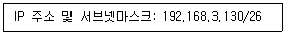
- 192.168.3.190
- 192.168.3.191
- 192.168.3.192
- 192.168.3.193
(정답률: 54%)
58. 다음 IPv4의 A 클래스 대역에 할당된 사설 네트워크 대역의 개수로 알맞은 것은?
- 1
- 10
- 16
- 256
(정답률: 53%)
59. 다음 설명에 해당하는 서비스로 알맞은 것은?
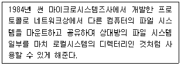
- NIS
- NFS
- CIFS
- SAMBA
(정답률: 69%)
60. 다음 중 메일 서버간의 메시지 교환할 때 사용되는 프로토콜로 알맞은 것은?
- FTP
- POP3
- IMAP
- SMTP
(정답률: 78%)
61. 다음 중 네트워크 인터페이스 환경 설정과 관련된 파일들이 저장되어 있는 디렉터리로 알맞은 것은?
- /etc/networking/devices
- /etc/sysconfig/devices
- /etc/sysconfig/network
- /etc/sysconfig/network-scripts
(정답률: 48%)
62. 다음 중 운영 중인 서버의 특정 포트에 접속하여 연결된(ESTABLISHED) 정보를 확인하는 명령의 조합으로 가장 알맞은 것은?
- ip, netstat
- ss, netstat
- ip, route
- ss, route
(정답률: 59%)
63. 다음 결과에 해당하는 명령으로 알맞은 것은?
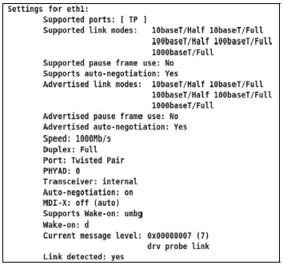
- ss
- ip
- route
- ethtool
(정답률: 70%)
64. 다음은 다른 계정으로 접근하는 과정이다. ( 괄호 ) 안에 들어갈 내용으로 알맞은 것은?
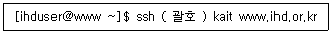
- -u
- -n
- -p
- -l
(정답률: 52%)
65. 다음 FTP 서비스 관련 포트 번호의 조합으로 알맞은 것은?
- ㉠ ftp: 20 ㉡ ftp-data: 21
- ㉠ ftp: 21 ㉡ ftp-data: 20
- ㉠ ftp: 22 ㉡ ftp-data: 21
- ㉠ ftp: 21 ㉡ ftp-data: 22
(정답률: 65%)
66. 다음 중 이더넷 케이블의 배열 순서인 T568B를 표준화한 기구로 알맞은 것은?
- ISO
- EIA
- ITU
- IEEE
(정답률: 38%)
67. 다음 설명에 해당하는 프로토콜로 알맞은 것은?
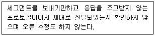
- IP
- ARP
- UDP
- TCP
(정답률: 77%)
68. 다음 중 표현 계층에 대한 설명으로 틀린 것은?
- 데이터의 암호화와 해독을 수행한다.
- 데이터의 전송 순서 및 동기점의 위치를 제공한다.
- 효율적인 전송을 위해 필요에 따라 압축과 압축해제를 진행한다.
- 코드와 문자를 번역하여 일관되게 전송 데이터를 서로 이해할 수 있도록 한다.
(정답률: 64%)
69. 다음 설명에 해당하는 프로토콜로 가장 알맞은 것은?
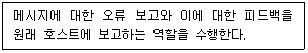
- IP
- ARP
- UDP
- ICMP
(정답률: 72%)
70. 다음 중 장애 발생 시에도 다른 시스템에 영향이 적고, 우회할 수 있는 방법이 존재하여 신뢰성이 높은 LAN 구성 방식으로 알맞은 것은?
- 스타형
- 버스형
- 링형
- 망형
(정답률: 74%)
71. 다음 중 웹서비스에 사용되는 포트번호로 알맞은 것은?
- 80
- 143
- 8008
- 8080
(정답률: 65%)
72. 다음 설명에 해당하는 웹 브라우저로 알맞은 것은?
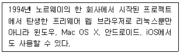
- 크롬
- 사파리
- 오페라
- 파이어폭스
(정답률: 54%)
73. 다음 중 할당받은 C 클래스 네트워크 주소 대역에서 서브넷마스크를 255.255.255.192이고, 인터넷 사용이 가능하도록 설정했을 경우에 사용 가능한 IP 주소 개수로 알맞은 것은?
- 61
- 62
- 63
- 64
(정답률: 32%)
74. 다음과 같은 설정이 저장되는 파일로 알맞은 것은?
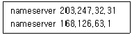
- /etc/hosts
- /etc/resolv.conf
- /etc/sysconfig/network
- /etc/sysconfig/network-scripts
(정답률: 62%)
75. 다음 중 IPv6의 주소 표현의 단위로 알맞은 것은?
- 32bit
- 64bit
- 128bit
- 256bit
(정답률: 72%)
76. 다음 중 도시권 통신망인 MAN과 관련된 프로토콜로 알맞은 것은?
- X.25
- ATM
- DQDB
- FDDI
(정답률: 52%)
77. 다음 설명에 해당하는 기술이 탑재된 제품으로 알맞은 것은?
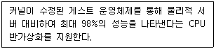
- Xen
- KVM
- RHEV
- VitualBox
(정답률: 53%)
78. 다음 구성에 해당하는 클러스터링 기법으로 알맞은 것은?
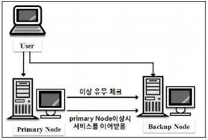
- LVS
- HA 클러스터
- HPC 클러스터
- 베어울프 클러스터
(정답률: 67%)
79. 다음 설명에 해당하는 운영체제로 알맞은 것은?
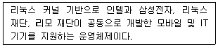
- Tizen
- webOS
- Bada OS
- QNX
(정답률: 69%)
80. 다음 설명으로 알맞은 것은?
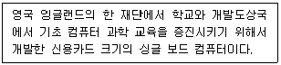
- Arduino
- Raspberry Pi
- Micro Bit
- Cubie Board
(정답률: 65%)